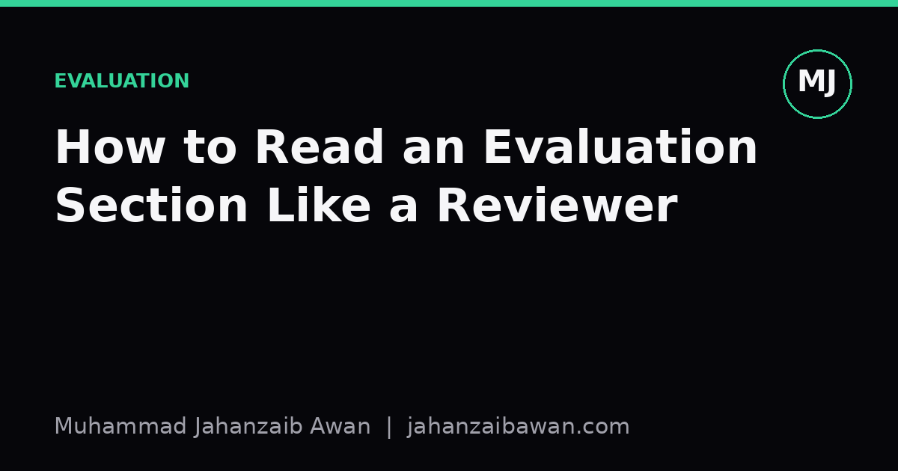

How to Read an Evaluation Section Like a Reviewer
Most readers skim the numbers and the bar charts. Reviewers ask where the numbers came from, and whether they would survive a slightly different split.

Why the results table is the least trustworthy part of the paper
Most people read a results table the way they read a football score. Someone won, someone lost, the winning number is in bold, move on. That habit is fine for entertainment and terrible for research. A results table is a claim, not a fact, and claims need to be interrogated before they are believed. Reviewers are not smarter than other readers, they have simply trained themselves to ask a fixed set of questions before accepting a number at face value.
The core problem is that a single accuracy or F1 figure hides an enormous amount of decision-making: how the data was split, what counted as a fair baseline, how many times the experiment was run, and what was quietly excluded because it did not fit the story. None of this is usually malicious. It is just that authors, like all of us, are more confident in their own pipeline than a stranger should be. The evaluation section is where that confidence gets tested, and reading it like a reviewer means refusing to take the summary sentence as the whole truth.
Consider a paper claiming a new model reaches 91.2 percent accuracy on a benchmark, beating a prior method at 88.7 percent. A casual reader sees a 2.5 point improvement and files it as progress. A reviewer's first question is duller but more important: is that 2.5 point gap bigger than the noise you would expect from re-running the same model with a different random seed? If a model's accuracy already swings between 89 and 91 percent across five seeds with no changes at all, then a single 91.2 percent run proves almost nothing.
Check the split before you check the score
The single most common failure mode in evaluation sections is a split that leaks information from training into testing without anyone intending it. This is worth dwelling on with a concrete example. Imagine a dataset of patient records collected over three years, split randomly into 80 percent training and 20 percent testing. If a single patient contributes multiple records over time, some of that patient's records will land in training and some in testing purely by chance. A model can then partially memorise patient-specific patterns rather than learn anything generalisable, and the test score will look better than the model deserves.
A reviewer's habit is to ask: what is the unit of independence here, and does the split respect it? In the patient example, the correct unit is the patient, not the record, so the split should group all of one patient's records on one side of the boundary. The same logic applies to time series, where a random shuffle can let the model see the future before predicting the past, and to text corpora, where near-duplicate documents can appear on both sides of a supposedly clean split.
Here is where the numbers become concrete. Suppose the leaky, record-level split gives 91.2 percent accuracy, and the same model, re-evaluated with a proper patient-level split, gives 84.6 percent. That 6.6 point drop is not the model getting worse, it is the original number being wrong. This is exactly the kind of gap a reviewer looks for, because it usually will not be visible in the abstract, it will be buried, if mentioned at all, in a data preparation paragraph three pages in. Reading like a reviewer means going looking for that paragraph instead of waiting for it to announce itself.
Interrogate the baselines and the variance, not just the winner
A strong result against a weak baseline is not a strong result. This sounds obvious stated plainly, yet it is one of the easiest things to miss when a paper is well written and confident in tone. The question to ask is whether the comparison methods were given a fair amount of tuning effort, or whether they were run with default settings while the new method received careful hyperparameter search. If a baseline was never given a chance to use the same preprocessing, the same amount of training time, or the same validation-based tuning, then beating it tells you very little about the actual contribution.
Take a worked example. A paper proposes a new architecture and reports it beating a well-known baseline by 4 points on a benchmark. Buried in an appendix, the baseline was trained for 10 epochs with no learning rate schedule, while the new method was trained for 50 epochs with a cosine schedule and early stopping on a validation set. A reviewer re-reads the experimental setup section specifically looking for this asymmetry, because an unfair fight dressed up as a fair one is far more common than outright fabrication.
Variance is the second thing that deserves real scrutiny. A single run reported to one decimal place invites false precision. If a paper reports results across, say, five random seeds with a mean of 87.3 percent and a standard deviation of 1.8 points, and the baseline sits at 85.9 percent with a standard deviation of 2.1 points, those two ranges overlap substantially. Calling that a clear win is optimistic at best. A reviewer wants to see either multiple seeds with reported spread, or a paired statistical test that accounts for the fact that both methods were evaluated on the same test examples, since paired tests are far more sensitive than comparing two unpaired means.
It is also worth checking whether the improvement holds across subgroups or only on the aggregate. A method that gains 3 points overall but does so entirely by improving one easy subclass while quietly losing ground on a harder one is a different story than a method improving broadly. Reviewers look for a breakdown by class, by domain, or by difficulty stratum, because the headline number is an average, and averages are exactly the kind of thing that hides uneven progress.
The practical habit worth keeping
None of this requires special expertise, it requires a short checklist applied consistently. Before accepting a reported number, ask what unit the split was made on and whether it matches the unit of independence in the data. Ask whether the baselines received comparable tuning effort and training budget. Ask how many runs produced the reported figure and whether the spread across runs is smaller than the claimed improvement. Ask whether the win holds up when the results are broken down rather than averaged.
This habit is slower than reading for the headline, and that is precisely the point. A reviewer's job is to be the friction that keeps a field honest, and adopting that friction as a personal reading habit makes you a better judge of what to build on and what to treat cautiously. The evaluation section is not a formality after the interesting part of the paper, it is where the interesting part gets tested, and it deserves to be read with exactly that level of seriousness.